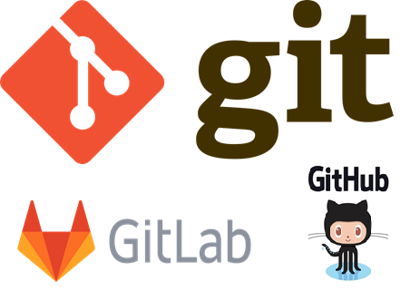
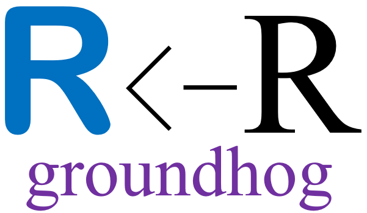
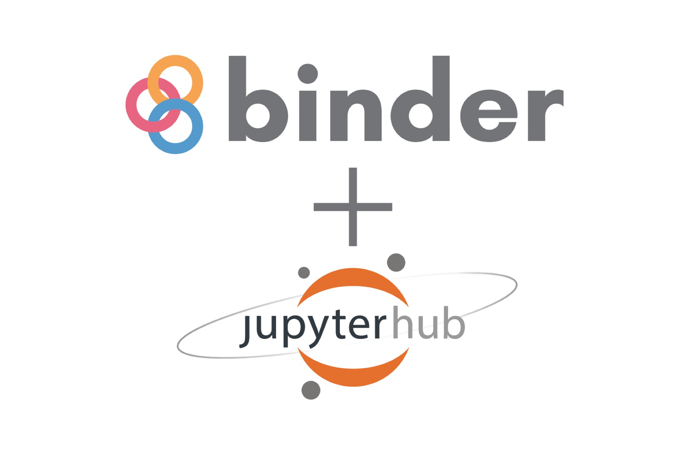
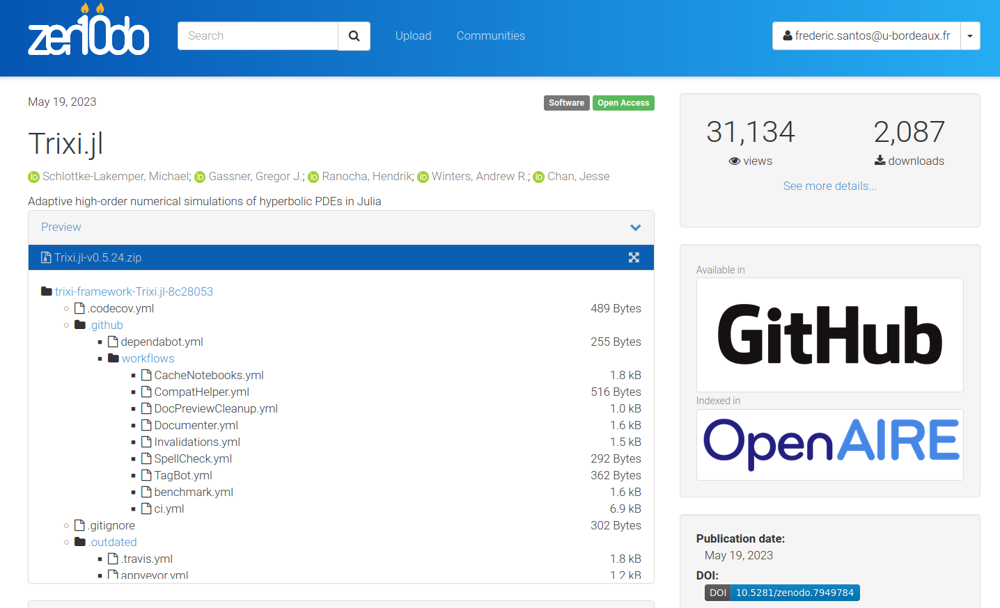
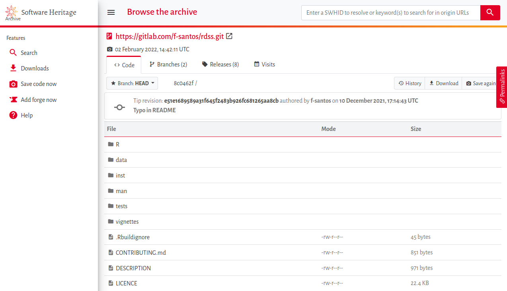

Ouvrir et partager ses codes informatiques
Frédéric Santos
frederic.santos@u-bordeaux.fr
Jeudi 22 juin 2023
1. Ouvrir (simplement)
1.1. Versionner avec Git, publier sur des forges
- La solution idéale, au croisement de plusieurs pratiques efficaces pour la collaboration, la traçabilité, la transparence.
- Démarche générale : versionner localement avec Git, puis “pousser” périodiquement sur des forges logicielles distantes (GitLab.com, GitHub, …).
- Un exemple : le dépôt d’un package R sur GitLab.com.

1.2. Quelques aspects “juridiques”
- Choix de la licence. Le code mis à disposition publiquement devrait disposer d’une licence d’utilisation. Si vous souhaitez opter pour une licence libre, la licence CeCILL est une adaptation en droit français des principes de la licence libre GPL. (La licence CeCILL a été créée par les principaux EPST français.)
- Choix de la forge. La politique de sécurité des services d’information du CNRS ou d’UB est assez floue sur ce point, mais l’usage de forges Git privées (GitHub appartient à Microsoft) peut être vu comme problématique. On pourra préférer l’une des forges institutionnelles (Huma-Num, GitUB) basées sur GitLab.
2. Partager (avec de meilleures pratiques)
2.1. Au-delà du script : les notebooks
- Les notebooks (ou documents computationnels) permettent de mélanger du code, des sorties de code et du texte en langue naturelle dans un même document, suivant la philosophie de la programmation lettrée de Donald Knuth.
- Offre la meilleure présentation possible d’un code, par la possibilité de le documenter exhaustivement.
- Idéal en tant que Supporting Information d’un article (un exemple ici).
- Plusieurs systèmes possibles : JupyterLab (Julia, R, Python), Pluto (Julia uniquement), Org-mode (tous langages), Quarto (Julia, Observable, Python, R), etc.
- Une démonstration d’un notebook R + Jupyter
2.2. Rendre son code plus reproductible
- Ouvrir son code assure la transparence des analyses réalisées, mais pas nécessairement sa reproductibilité.
- D’un ordinateur à l’autre, les résultats pourront varier (ou le code pourra même ne plus s’exécuter du tout !) en fonction des versions logicielles, des versions de packages, etc.
- En plus de l’ouverture du code, une bonne pratique est de décrire, ou de rendre portable, l’environnement logiciel que l’on a utilisé.
2.2.1. Des solutions pour Julia ou Python
- En Julia, de simples fichiers texte de “manifeste” (
Project.toml,Manifest.toml) permettent de spécifier les versions de packages désirées à l’échelle de chaque projet. Ces fichiers rendent l’environnement logiciel exact portable sur une autre machine sans difficulté, et assurent la reproductibilité des résultats. - La philosophie de Python est équivalente, avec là encore fichiers de configuration que l’on peut définir à l’échelle du projet.
2.2.2. Des solutions pour R
- En R, il n’existe pas d’équivalent “natif” des fichiers de configuration de Julia ou Python.
- L’outil le plus léger est le package
{groundhog}, disponible sur le CRAN, qui permet de spécifier et d’utiliser les versions de packages R (et leurs dépendances) correspondant une date précise. - Un outil plus lourd mais plus complet est le package
{renv}, qui permet lui aussi de spécifier et d’isoler des versions de packages spécifiques pour un projet.

2.3. Quelques exemples concrets
Le fait de partager le code (et si possible, le manuscrit) d’un article scientifique en ayant pris quelques mesures simples de reproductibilité est généralement connu sous le nom de compendium. En voici quelques exemples récents, librement accessibles :
- Un dépôt GitHub avec des notebooks Rmarkdown accompagnant une pré-publication
- Un exemple similaire dans une autre discipline
- Une pré-publication sous forme HTML rédigée avec Quarto
2.4. Reproductibilité computationnelle avec Binder
- Le Binder Project (MyBinder) permet de partager aisément des environnements logiciels reproductibles, exécutables sans effort par l’utilisateur final (reviewer, collègue, …).
- Binder prend en charge les langages de programmation usuels en science des données : Julia, Python, R.
- Actuellement maintenu par l’équipe de Jupyter, il prend aussi en charge Rstudio.

2.4.1. Principe
- Avoir un dépôt GitLab / GitHub.
- Y avoir entreposé du code informatique sous la forme de scripts, ou mieux, de notebooks (Jupyter, Quarto, Rmarkdown).
- Avoir spécifié des versions du langage utilisé (par exemple, R 4.2.3) et des packages mobilisés pour les analyses.
- Soumettre le lien du dépôt au service MyBinder.
- Un environnement spécifique est alors créé sur un serveur distant, et devient exécutable par tout utilisateur simplement via son navigateur web.
2.4.2. Un exemple de publication “binderisée”
- Référence : Arranz-Otaegui, A., & Roe, J. (2023). Revisiting the concept of the “Neolithic Founder Crops” in southwest Asia. Vegetation History and Archaeobotany. http://dx.doi.org/10.1007/s00334-023-00917-1
- Dépôt GitHub : https://github.com/joeroe/SWAsiaNeolithicFounderCrops
- Lien Binder vers le manuscrit reproductible.
2.5. Des solutions encore plus avancées : Docker, Guix
- La conteneurisation. Pour aller plus loin, on peut aussi “conteneuriser” son code, en isolant l’ensemble de l’environnement logiciel (versions de l’OS, des librairies système, du langage de programmation et de ses paquets) dans une forme légère de machine virtuelle, exécutable sur tout ordinateur. Cela rend le code intégralement reproductible. Docker (et sa plateforme de partage DockerHub) est une solution populaire, mais est propriétaire et privée.
- GNU Guix est une alternative libre, mais plus complexe et moins universelle. Il s’agit d’un système de gestion de paquets pour le système GNU, permettant de déployer des environnements reproductibles.
2.6. Un exemple de publication “Dockerisée”
- Référence : Santos, Frédéric (2020). Modern methods for old data: An overview of some robust methods for outliers detection with applications in osteology. Journal of Archaeological Science: Reports, 32, 102423.
- La publication finale : http://dx.doi.org/10.1016/j.jasrep.2020.102423
- Le dépôt GitLab associé : https://gitlab.com/f-santos/reproducibility-package-for-santos-2020-jasr
- Le conteneur logiciel permettant de reproduire les résultats
3. Archiver
3.1. Principes
- Les dépôts sur des forges Git (GitLab, GitHub, …) ne constituent pas des archives pérennes : ils peuvent disparaître… ou devenir payants !
- Plusieurs initiatives proposent au contraire un archivage pérenne du code informatique. Par exemple, Zenodo (dépôt volontaire par l’auteur du code), ou Software Heritage (moisson automatique à partir de plusieurs sources).
- Il faut donc bien distinguer les plateformes de développement (forges Git), et les entrepôts d’archivage.
3.2. Zenodo
- Zenodo est une plateforme d’archivage de code et de données créée par le CERN.
- Tout dépôt sur Zenodo est définitif : ce qui y est déposé ne peut plus être retiré. En revanche, de nouvelles versions logicielles peuvent être soumises (correction de bugs, ajout de fonctionnalités, etc.).
- Tout dépôt sur Zenodo permet de recevoir un DOI : le logiciel devient donc citable en lui-même.

Exemple d’archivage d’un package Julia

3.3. Software Heritage
- Software Heritage est une initiative à but non lucratif (issue de l’Inria), garantissant un archivage pérenne.
- Software Heritage se donne pour mission “de fournir une archive uniformisée, universelle, de tout le patrimoine logiciel de l’humanité”.
- Par défaut, Software Heritage moissonne automatiquement et périodiquement le contenu des dépôts GitLab / GitHub, des archives de paquets usuelles (CRAN, CTAN, Npm, Pypi, …).
- On peut aussi soumettre directement une source logicielle qui n’est pas moissonnée automatiquement.
- Les logiciels archivés (via leurs blobs Git) reçoivent un identifiant unique, le SWHID.
Exemple d’archivage d’un dépôt GitLab

4. Outils pour se former
4.1. Vers une recherche reproductible
- Un livre par Desquilbet et al., librement disponible en ligne sur HAL : https://hal.science/hal-02144142
- Une approche pratique partant de problématiques réelles, après un “travail de terrain” auprès de la communauté académique.

4.2. Le MOOC Recherche reproductible
- Un cours en ligne sur France Université Numérique (FUN), traitant de tous les aspects liés à la science ouverte : cahiers de laboratoire, transparence, reproductibilité computationnelle, etc.
- Plusieurs parcours disponibles en fonction du langage (Python ou R) et de l’environnement de développement (Emacs, Jupyter ou Rstudio).

4.3. Des “articles-tutoriels”
De nombreux articles, publiés dans des revues académiques, fournissent des introductions très pédagogiques aux outils et enjeux de la science ouverte :
- Alston, J. M., & Rick, J. A. (2021). A Beginner’s Guide to Conducting Reproducible Research. The Bulletin of the Ecological Society of America, 102(2), 01801. http://dx.doi.org/10.1002/bes2.1801
- Marwick, B. (2017). Open Science in Archaeology. http://dx.doi.org/10.17605/OSF.IO/3D6XX
- Marwick, B. (2017). Computational Reproducibility in Archaeological Research: Basic Principles and a Case Study of Their Implementation. Journal of Archaeological Method and Theory, 24(2), 424–450. http://dx.doi.org/10.1007/s10816-015-9272-9
- Munafò, Marcus R., Nosek, B. A., Bishop, D. V. M., et al. (2017). A manifesto for reproducible science. Nature Human Behaviour, 1(1), 1–9. http://dx.doi.org/10.1038/s41562-016-0021